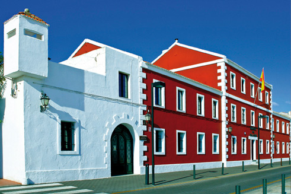

МЕНОРКА, богатства культуры
 Менорка – это больше, чем солнце и пляжи. На протяжении многих столетий здесь бурлили, сменяя друг друга, различные культуры и цивилизации, формируя мозаику образов сегодняшнего острова со всеми его культурными богатствами, которых даже больше, чем может показаться на первый взгляд.
Менорка – это больше, чем солнце и пляжи. На протяжении многих столетий здесь бурлили, сменяя друг друга, различные культуры и цивилизации, формируя мозаику образов сегодняшнего острова со всеми его культурными богатствами, которых даже больше, чем может показаться на первый взгляд.
Заметный след оставили уже самые первые обитатели острова. Поражает древнее архитектурное наследие: наветы (navetas), талайоты (talayots) и таулы (taules), которые встречаются во многих уголках острова, напоминая нам о том, как все начиналось, и переносят нас на мгновение в ту эпоху.
Век за веком Менорка культурно обогащалась. Англичане, французы, испанцы… Их присутствие на острове в разные эпохи создало здесь неповторимую атмосферу многокультурности, это наследие сегодня бережно охраняется и развивается. Будучи на острове, непременно посетите Музей Менорки в Маоне (Museo de Menorca, Maó) и Муниципальный Музей Сьютаделлы (Museo Municipal de Ciutadella). Познакомиться с историей Менорки можно в Военном музее в Эс-Кастель (Museo Militar de Es Castell), форте Мальборо (Fort Marlborough) и крепости Ла Мола в Маоне (La Mola). В Епархиальном музее Сьютаделы (Museo Diocesano de Ciutadella), само здание которого уже заслуживает пристального внимания, хранится богатая коллекция произведений искусства различных эпох. И это далеко не все. Советуем вам поискать дополнительную информацию.
 Среди культурных ценностей острова, одна из важнейших, без сомнения, – Главный Театр в Маоне (Teatro Principal de Maó). Он был воздвигнут в 1829 году и является самым старым оперным театром в Испании. После многих реконструкций и расширений он превратился в современное культурное пространство, способное принять на своей сцене все разнообразие театральных искусств. Неповторимую атмосферу, сохранившуюся и сегодня, театр обрел в XIX веке благодаря итальянскому оперному импресарио Джовани Паладжи (Giovanni Palagi). Наружная каменная отделка здания придает ему меноркинский дух, в то время как внутри стараниями островных архитекторов удалось сочетать модернистскую архитектуру с уважением к традициям. Зал в форме подковы, вместе с трехъярусным балконом и галеркой, вмещает около тысячи человек. За последние годы театр снискал славу главной культурной площадки острова, где проходят самые разные представления, спектакли и мероприятия. Ознакомьтесь с программой – наверняка, вы найдете что-то на свой вкус.
Среди культурных ценностей острова, одна из важнейших, без сомнения, – Главный Театр в Маоне (Teatro Principal de Maó). Он был воздвигнут в 1829 году и является самым старым оперным театром в Испании. После многих реконструкций и расширений он превратился в современное культурное пространство, способное принять на своей сцене все разнообразие театральных искусств. Неповторимую атмосферу, сохранившуюся и сегодня, театр обрел в XIX веке благодаря итальянскому оперному импресарио Джовани Паладжи (Giovanni Palagi). Наружная каменная отделка здания придает ему меноркинский дух, в то время как внутри стараниями островных архитекторов удалось сочетать модернистскую архитектуру с уважением к традициям. Зал в форме подковы, вместе с трехъярусным балконом и галеркой, вмещает около тысячи человек. За последние годы театр снискал славу главной культурной площадки острова, где проходят самые разные представления, спектакли и мероприятия. Ознакомьтесь с программой – наверняка, вы найдете что-то на свой вкус.
Приятно удивляет большое количество культурных организаций на острове, занятых развитием разных видов искусств. Особенно много мероприятий и различных фестивалей в летний сезон. Вы не можете покинуть остров, не увидев традиционные танцы и не услышав здешнюю музыку. Как видите, Менорка и в самом деле гораздо больше, нежели солнце и пляжи. Здесь умеют жить хорошо и со вкусом, подкрепляя этим утверждение: в здоровом теле – здоровый дух. И наоборот.